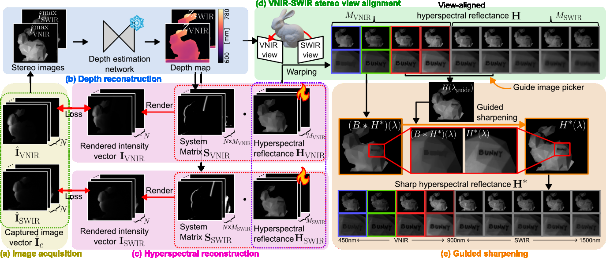

Hyperspectral 3D imaging enables the capture of dense spectral information and scene geometry but has traditionally been confined to narrow spectral windows, typically the visible range. In this work, we introduce a broadband hyperspectral 3D imaging (BH3D) method to extend this capability across the full visible-near-infrared and short-wavelength infrared (SWIR) spectrum (450–1500nm). This broad coverage is critical as it captures complementary physical cues: visible wavelengths reveal surface appearance, while SWIR bands provide insight into subsurface properties and material composition. However, realizing BH3D is challenging due to fundamental sensor constraints between visible-spectrum silicon and SWIR-spectrum InGaAs sensors, which necessitate complex multi-spectrograph designs. Here we propose a single-spectrograph BH3D system, using a stereo setup comprising visible and SWIR cameras, that reconstructs dense broadband hyperspectral reflectance together with accurate 3D geometry. Our key idea is to extend dispersed structured light to the broadband regime using a single spectrograph. We model the image formation of broadband dispersed structured light, and estimate hyperspectral reflectance and depth. We validate our approach on diverse real-world scenes, demonstrating accurate reconstruction with a mean spectral angle mapper of 0.13 rad, root mean square error of 0.03, and mean depth error of 4.5mm. We further demonstrate identifying metameric materials, performing imaging through opaque layers, uncovering hidden features on banknotes, and revealing blood vessels.
We design an imaging system that jointly captures depth and broadband hyperspectral reflectance from the visible to the SWIR range. The system comprises a broadband dispersed structured light module and a stereo camera consisting of VNIR and SWIR sensors. A halogen lamp, which provides continuous spectral coverage from the visible to the SWIR range, serves as the broadband illumination source. The emitted light is first collimated using a pair of spherical lenses and an aperture, then shaped into a line illumination by a cylindrical lens and a vertical slit. The resulting beam is spectrally dispersed by a prism and subsequently reflected by a galvanometric mirror to illuminate and scan the scene.

(a) Images are captured under $N$ number of galvo mirror angles for each VNIR and SWIR cameras.
(b) We synthesize stereo images using captured image vectors, then reconstruct accurate depth map with a pre-trained depth estimation network.
(c) Hyperspectral reflectance is recovered by minimizing the photometric residual between the captured image vectors and the rendered intensity vectors.
(d) The VNIR and SWIR hyperspectral reflectance maps are aligned to a common reference view (VNIR) by warping them using the estimated depth.
(e) To compensate for spectral-dependent focus blur, sharp image is selected as a guide image for guided sharpening. Finally, we get a view aligned and sharp VNIR-SWIR hyperspectral reflectance $\textbf{H}^*$ spanning wavelength from 450nm to 1500nm.
@inproceedings{shin2026broadband,
title={Broadband Hyperspectral 3D Imaging using Dispersed Structured Light},
author={Shin, Suhyun and Moon, Yunseong and Maeda, Ryota and Lindell, David and Kutulacos, Kyros and Baek, Seung-Hwan},
booktitle = {Proceedings of the SIGGRAPH},
year={2026}
}